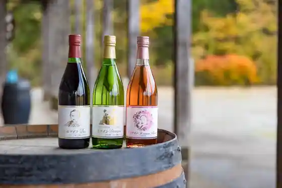
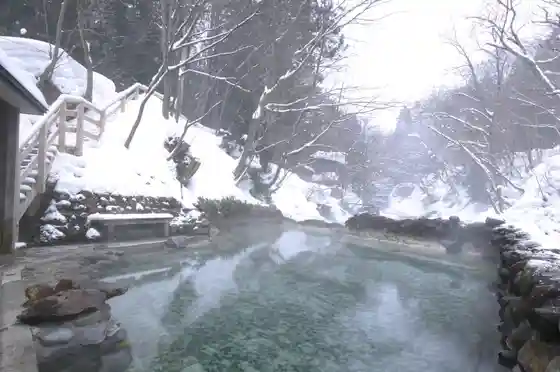
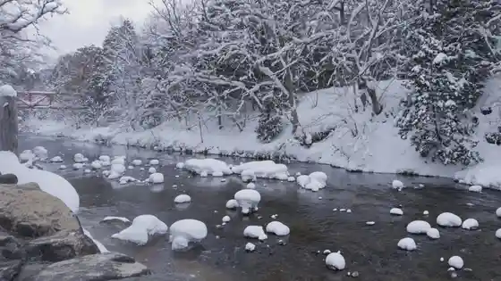

Osorezan Reijo / Osorezan Bodai Tera
Mutsu, Aomori · 0175-22-3825 · Official / source link
Kamabuse Yama Lookout
Mutsu, Aomori · 0175-22-1111 · Official / source link
Shimokita Wain (Sanmamoruwainarii)
Mutsu, Aomori · 0175-42-3870 · Official / source link

Oku Yagen Onsen Ganso Kappa Baths
Mutsu, Aomori · 0175-34-2111 · Official / source link

Yagen Keiryu
Mutsu, Aomori · 0175-34-2111 · Official / source link

Kawauchi Hachiman Shrine Rei Taisai
Mutsu, Aomori · 0175-42-2236 · Official / source link
Gururinshimokita Kanko Rutobasu
Mutsu, Aomori · 0175-34-9095 · Official / source link
Hokuyo Kan
Mutsu, Aomori · 0175-24-1111 · Official / source link
Yunokawa Onsen Sato
Mutsu, Aomori · 0175-23-1311 · Official / source link
Shimokita Hakase to Meguru ” Horo Yoi ” Sanpo
Mutsu, Aomori · 0175-31-1270 · Official / source link
Kawauchi Kawa Keikoku Promenade
Mutsu, Aomori · 0175-42-2301 · Official / source link
Roadside Station Waki no Sawa (Rifuresshu Center Tara Village)
Mutsu, Aomori · 0175-44-3252 · Official / source link
Nozaru Park
Mutsu, Aomori · 090-3364-0561 · Official / source link
Kita no Sakimori Ominato An Watari Kan
Mutsu, Aomori · 0175-29-3101 · Official / source link
Mutsu Kagakugijutsukan
Mutsu, Aomori · 0175-25-2091 · Official / source link
Tonan Oka Bokujo Miruku Workshop Bon Sabu
Mutsu, Aomori · 0120-496-369 · Official / source link
Oku Yagen Onsen Fufu Kappa Baths
Mutsu, Aomori · 0175-34-2008 · Official / source link
Suigen Ike Park
Mutsu, Aomori · 0175-22-1111 · Official / source link
Ohata Hachiman Shrine Rei Taisai
Mutsu, Aomori · 0175-34-3636 · Official / source link
Osorezan Hiyamizu
Mutsu, Aomori · 0175-23-1311 · Official / source link
So Kakari Reikusaidohiru Campground
Mutsu, Aomori · 0175-23-8686 · Official / source link
Kita no Sakimori Ominato Kaibo Kan
Mutsu, Aomori · 0175-29-3101 · Official / source link
Roadside Station Kawauchi Mizumi (Nohira Kogen Koryu Center)
Mutsu, Aomori · 0175-38-5108 · Official / source link
Wakinosawa Hachiman Shrine Rei Taisai
Mutsu, Aomori · 0175-44-2111 · Official / source link
Tanabu Shrine
Mutsu, Aomori · 0175-22-7470 · Official / source link
Shimokita Tourist Information
Mutsu, Aomori · 0175-34-9095 · Official / source link
So Kakari Numa Park
Mutsu, Aomori · 0175-22-1591 · Official / source link
Tokusanhin Fea
Mutsu, Aomori · 0175-44-2111 · Official / source link
O Tegaru Ni Shimokita no Umi no Sachi Wo (Hamayaki Ki) De Tanno !
Mutsu, Aomori · 0175-31-1270 · Official / source link
Yamame Tsukamidori Festival
Mutsu, Aomori · 0175-42-2301 · Official / source link
Mutsu Kisa Mai Kan
Mutsu, Aomori · 0175-33-8191 · Official / source link
Kita Sai Market Shimokita Meisan Center
Mutsu, Aomori · 0175-22-3231 · Official / source link
Mutsu Umi to Mori Fureai Taiken Kan
Mutsu, Aomori · 0175-42-2411 · Official / source link
Shimokita no Hikyo (Oku Yagen) Wo Tansaku ! Shinrin Yoku De Ritoriitotorekkingu !
Mutsu, Aomori · 0175-31-1270 · Official / source link
Tai Shima
Mutsu, Aomori · 0175-44-2111 · Official / source link
Oku Yagen Shukei Koen Resutohausu
Mutsu, Aomori · 0175-34-6083 · Official / source link
Fureai Onsen Kawauchi
Mutsu, Aomori · 0175-42-5245 · Official / source link
Mutsu Ei Yagen Yaeijo
Mutsu, Aomori · 0175-34-3175 · Official / source link
Mutsu Kamabuse Yama Ski Area
Mutsu, Aomori · 0175-24-1881 · Official / source link
Kawauchi Marin Biichi
Mutsu, Aomori · 0175-22-1111 · Official / source link
Kawa Kara Umi He ! Michinoku Wan Kayakku Sappu
Mutsu, Aomori · 0175-31-1270 · Official / source link
Mutsu Wakinosawa Ryutsu Center
Mutsu, Aomori · 0175-44-2233 · Official / source link
Atago Yama Beach
Mutsu, Aomori · 0175-22-1111 · Official / source link
Ohata Seaside Park
Mutsu, Aomori · 0175-22-1111 · Official / source link
Icho Ki no Dai Icho
Mutsu, Aomori · 0175-22-1111 · Official / source link